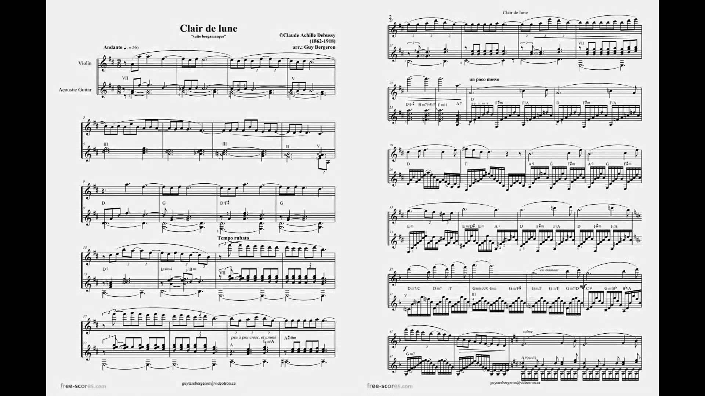
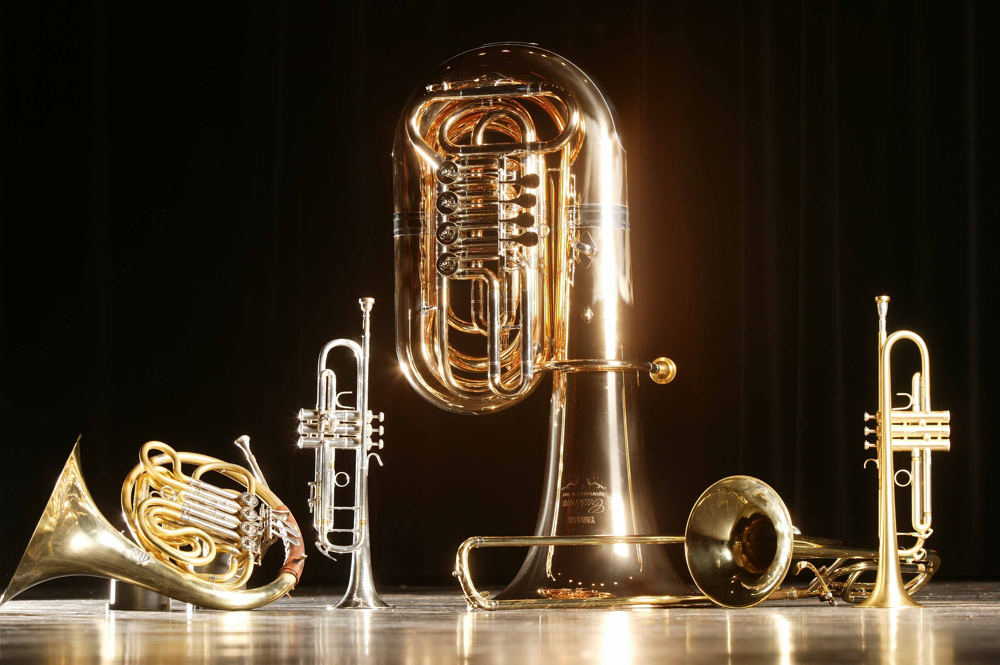

Trucs et astuces pour susciter l'émotion par la musique
L’objectif de la musique est de faire naître l’émotion chez ceux qui l’écoutent. Cette émotion peut entraîner des modifications physiologiques, expressives et mentales. C’est pourquoi la musique est le langage de l’âme.
Nous allons voir maintenant les différents éléments de la musique qui permettent de susciter l’émotion.
Une palette unique d’outils
Intensités, tons, rythmes, tenues des notes, instruments,... le compositeur peut jouer avec différents outils afin de composer une musique qui fera ressentir une émotion particulière voire plusieurs.
Par exemple, alors que des accords mineurs ou une intensité sonore faible (pianissimo) donneront une impression de peur et d’angoisse, les accords majeurs et une intensité sonore forte (fortissimo) rappelleront une ambiance joyeuse. Cela est dû aux interprétations que fait le cerveau en écoutant une musique et dériverait des stratégies vocales développées pour communiquer.

Des motifs et des structures sonores et musicales sont caractéristiques de certaines émotions. En jouant sur le phrase musical (parcours temporel et dynamique d’une phrase), la longueur des notes, leur succession,... une large gamme d’émotions ressort.
Pour la joie : Rythme rapide. Niveau sonore moyen. Articulation très staccato.
Phrase resserré. Ponctuation renforcée. Contraste de durée renforcé.
Pour la tristesse : Rythme lent. Niveau sonore bas. Articulation legato.
Phrase élargie. Ponctuation diminuée. Contraste de durée inversé.
Pour la colère : Rythme très rapide. Niveau sonore élevé. Articulation staccato.
Phrase inversée. Ponctuation moyenne. Contraste de durée renforcé.
Pour la tendresse : Rythme lent. Niveau sonore bas. Articulation legato.
Phrase resserrée. Ponctuation diminuée.
Pour faire peur : Notes longues (très aiguës ou très graves), chromatismes (déplacement par demi-tons), dissonances (notes qui « sonnent faux »), clusters (« grappes » de notes), sons grinçants, stridents, voix étranges… On en trouve de nombreux exemples dans les films d’Hitchcock (la scène de la douche dans Psychose!) et dans les films d’horreur et de suspense ( Shining, L’exorciste, Scream, Sixième sens…)
Pour faire monter la tension : Crescendo (de plus en plus fort), ostinato (cellule rythmique ou mélodique qui se répète obstinément), superposition progressive de plusieurs plans sonores… Le duel d’Il était une fois dans l’Ouest, la scène de la gare dans Les incorruptibles, les poursuites de La mort aux trousses…
Un instrument, une ambiance
Violons, flûtes, piano, harpe… pour le romantisme et l’amour.
Caisse claire, tambour, trompette… pour les films militaires.
Guitare, banjo, guimbarde, imitation du galop du cheval… dans les westerns.
Cornemuse, flûte irlandaise, tambours africains, instruments traditionnels… pour évoquer différents pays ou paysages.
Clavecin, « vieux » instruments… pour une époque ancienne.
Synthétiseur, instruments électroniques… pour la science fiction.
